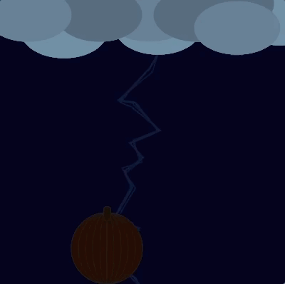

Lightning - Simple
This covers the essentials. When the user clicks their mouse, a lightning bolt is drawn through it.
Notes
- The shape of the lightening bolt changes every time the mouse is clicked or moved
- The bolt persists as long as the mouse location stays the same
- When the mouse is released, the bolt fades out (optional)
- I recommend using
beginShape(), vertex(x, y), and endShape() to accomplish this.
Lightning - Buzzing
A little more advanced. Adds a few effects to make the ligthning bolts more "static-y"
Notes
- As the mouse is held down, the bolt "buzzes" by randomly adding or subtracting a few pixels to the x location of each vertex that is drawn
- Also, the strokeWeight is randomly varied between 2 and 5
Lightning - Full Scene
Lightning looks even cooler when integrated into a scene!
Notes
- The bolts emerge from beneath the clouds
- This one has been modified to initiate lightning automatically at random times.
- A lightning bolts persists a few frames before being erased, during which it buzzes
- When the lightning bolt is being drawn, the fill color of the pumpkin is altered to a much brighter color, creating a "lit-by-lightning" effect.
